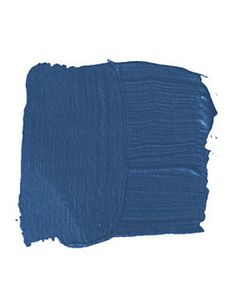

BLUE
 Ah, blue. The color of boys, according to people who put labels on colors. And while we're at it, I'd like to say that I don't agree with that type of gender labeling, thank you very much. My son loves pink, gets really charged by it. I think that's just fantastic. Yeah, little buddy, you pick that pink ice cream. It doesn't make you gay. Even if it did, I would support that 100% too. You're gold with me, kid (gold, oh man, another great color)!
Wait a minute, where were we?! Oh yes, the color blue. Boy, what a nice color, eh? Its shades can feel towering and bold, yet soft and soothing. It spans the heavens, and reaches deep depths below the sea. It describes a downtrodden emotion, and with that, a style of music.
My Memories: As a kid, I played two seasons of soccer with the blue team. There weren't any sponsors for that league, all the teams were recognized by their uniform colors. We were the Royal Blue Team, to be exact. Naturally, it replaced regular blue on my list of "favorite colors" at the time. "I will tell you my favorite colors, Timmy. I like green, orange and royal blue. It's the best blue, you know."
Nowadays, I find myself to be more of a navy blue guy. I like its richness, and to be honest, the way it compliments my eyes. It's the color I reach for first when dressing. "You're my boy, Blue!"